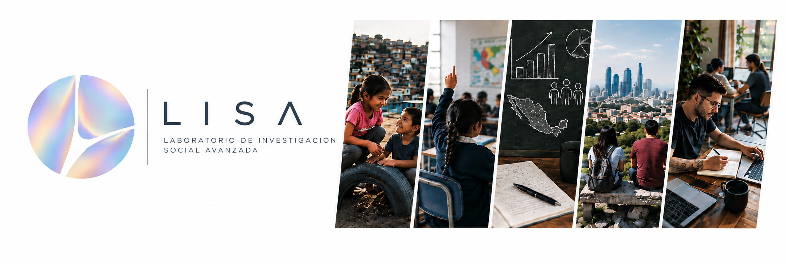

Modelo de optimización geoespacial para los Centros de Educación y Cuidado Infantil del IMSS
Herramientas de integración territorial, optimización y generación de recomendaciones para la localización de centros de cuidado infantil.

Las grandes causas merecen la mejor ciencia.
LISA es una empresa dedicada a la investigación social aplicada al desarrollo social en México, especialmente de los temas que tocan la calidad de vida y la viabilidad biográfica de las infancias. Nos especializamos en métodos cuantitativos, análisis territorial y evaluación de políticas públicas. Tenemos capacidad instalada para generar toda la cadena del proyecto de investigación: diseño conceptual, teórico y metodológico, generación de resultados con técnicas de vanguardia y creación de materiales de difusión para todos los públicos.
Integración de indicadores, análisis de correlaciones y modelización predictiva de riesgos nutricionales para niñas y niños en México.
Acceder a los programas de cálculo →Herramientas de integración territorial, optimización y generación de recomendaciones para la localización de centros de cuidado infantil.
Instrumento de investigación para analizar las condiciones familiares, escolares y territoriales que estructuran los procesos de aprendizaje.
Antonio Villalpando-Acuña
Director general
Para proyectos de investigación, evaluación, análisis territorial y colaboración científica.